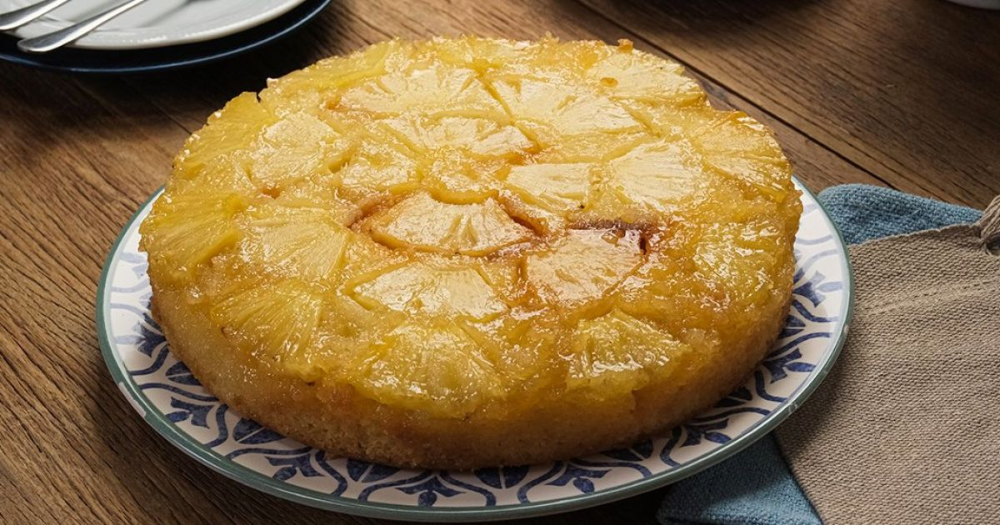

Bolo de Abacaxi
Estou fazendo minha 1° receita de bolo de abacaxi
Ingredientes
- 4 ovos
- 1 xícara de chá de açúcar
- 2 xícaras de chá de farinha de trigo
- 1 xícara de chá de suco de abacaxi (pode usar o da lata)
- 1/2 xícara de chá de óleo
- 1 colher de sopa de fermento em pó
- Abacaxi em rodelas (em calda ou natural) para a cobertura
Modo de Preparo
- No liquidificador, bata os ovos, o óleo e o suco de abacaxi.
- Em uma tigela separada, misture a farinha, o açúcar e o fermento.
- Adicione a mistura do liquidificador aos ingredientes secos e misture bem com um fouet ou colher.
- Unte uma forma redonda com buraco no meio com manteiga e farinha.
- No fundo da forma, distribua as rodelas de abacaxi e, por cima, coloque a massa.
- Leve para assar em forno pré-aquecido a 180°C por cerca de 40 minutos. Faça o teste do palito para ver se
está pronto.
Informações Adicionais
- Rendimento: Aproximadamente 12 porções.
- Tempo de preparo: 15 minutos.
- Tempo de cozimento: 40 minutos.
- Para um bolo ainda mais úmido, você pode regá-lo com a calda do abacaxi depois de assado.
- Sirva com uma bola de sorvete de creme para um toque especial.
